<title>AI in Museum Storytelling — Lukas Sydel Harder</title>
<meta charset="utf-8">
<meta name="viewport" content="width=device-width, initial-scale=1">
<style>
  :root {
    --bg: #ffffff;
    --fg: #1a1a1a;
    --muted: #666666;
    --card: #f5f5f5;
    --border: #e2e2e2;
    --accent: #2563eb;
    --warn: #b45309;
  }
  @media (prefers-color-scheme: dark) {
    :root {
      --bg: #12141a;
      --fg: #e8e8e8;
      --muted: #9a9a9a;
      --card: #1b1e26;
      --border: #2a2d36;
      --accent: #6ea8fe;
      --warn: #fbbf24;
    }
  }
  * { box-sizing: border-box; }
  body {
    margin: 0;
    font-family: -apple-system, BlinkMacSystemFont, "Segoe UI", Roboto, sans-serif;
    background: var(--bg);
    color: var(--fg);
    line-height: 1.6;
  }
  header {
    display: flex;
    justify-content: space-between;
    align-items: center;
    max-width: 900px;
    margin: 0 auto;
    padding: 2rem 1.5rem 1rem;
  }
  header a.back { color: var(--muted); text-decoration: none; font-size: 0.95rem; }
  header a.back:hover { color: var(--fg); }
  .logo { font-weight: 600; }
  main { max-width: 900px; margin: 0 auto; padding: 1.5rem; }

  h1 { font-size: 2.1rem; margin: 0 0 0.5rem; }
  .subtitle { color: var(--muted); font-size: 1.05rem; margin-bottom: 0.9rem; max-width: 640px; }
  .meta-row { display: flex; flex-wrap: wrap; gap: 0.4rem 0.6rem; margin: 0 0 1.1rem; }
  .meta-row .pill {
    display: inline-flex; align-items: center; gap: 0.4rem;
    padding: 0.2rem 0.7rem; border-radius: 999px;
    background: var(--card); border: 1px solid var(--border);
    color: var(--muted); font-size: 0.78rem; font-weight: 500;
  }

  .tags { display: flex; flex-wrap: wrap; gap: 0.4rem; margin: 0 0 1.4rem; }
  .tags.small { margin: 0 0 1.1rem; }
  .tags .pill {
    display: inline-flex; align-items: center; gap: 0.4rem;
    padding: 0.2rem 0.7rem; border-radius: 999px;
    background: var(--border); color: var(--fg);
    font-size: 0.78rem; font-weight: 500;
  }
  .tags.small .pill { font-size: 0.72rem; padding: 0.15rem 0.6rem; }
  .tags .pill::before {
    content: ""; width: 0.5rem; height: 0.5rem; border-radius: 50%;
    background: var(--dot, var(--accent));
  }

  .figure { margin: 1.5rem 0; }
  .figure img {
    width: 100%; display: block; border-radius: 10px;
    border: 1px solid var(--border); background: var(--card);
  }
  .figure figcaption { color: var(--muted); font-size: 0.82rem; margin-top: 0.5rem; }

  .case-section { padding: 2.75rem 0; border-top: 1px solid var(--border); }
  .case-section:first-of-type { border-top: none; padding-top: 0.5rem; }
  .case-section .eyebrow {
    color: var(--accent); text-transform: uppercase; letter-spacing: 0.04em;
    font-size: 0.78rem; font-weight: 600; margin-bottom: 0.5rem;
  }
  .case-section h2 { font-size: 1.45rem; margin: 0 0 0.7rem; }
  .case-section p { color: var(--fg); margin: 0 0 1rem; font-size: 0.96rem; max-width: 720px; }

  .tldr {
    font-size: 1.05rem; font-weight: 600; color: var(--fg);
    max-width: 720px; margin: 0 0 1.1rem;
  }

  .callout {
    background: var(--card); border: 1px solid var(--border); border-left: 3px solid var(--accent);
    border-radius: 8px; padding: 1rem 1.2rem; margin: 0 0 1.3rem; font-size: 0.92rem; max-width: 720px;
  }
  .callout .label {
    display: block; color: var(--accent); font-size: 0.78rem; font-weight: 600;
    text-transform: uppercase; letter-spacing: 0.04em; margin-bottom: 0.35rem;
  }
  .callout.insight { margin-top: 1.1rem; margin-bottom: 0; }

  .notice {
    display: block; background: var(--card); border: 1px solid var(--border);
    border-left: 3px solid var(--warn); border-radius: 8px;
    padding: 0.7rem 1rem; margin: 0 0 1.4rem; font-size: 0.88rem; max-width: 720px;
    color: var(--fg);
  }
  .notice b { color: var(--warn); }

  .gallery {
    display: grid; grid-template-columns: repeat(auto-fill, minmax(200px, 1fr));
    gap: 0.7rem; margin: 1.3rem 0;
  }
  .gallery a {
    display: flex; flex-direction: column; border-radius: 8px; overflow: hidden;
    border: 1px solid var(--border); background: var(--card);
  }
  .gallery a.selected { border-color: var(--accent); border-width: 2px; }
  .gallery img {
    width: 100%; aspect-ratio: 4 / 3; object-fit: cover; object-position: top;
    display: block; background: var(--card);
  }
  .gallery .cap {
    font-size: 0.74rem; color: var(--muted); padding: 0.45rem 0.55rem; line-height: 1.35;
  }
  .gallery .cap b { color: var(--accent); font-weight: 600; }

  footer {
    max-width: 900px;
    margin: 0 auto;
    padding: 2rem 1.5rem 3rem;
    color: var(--muted);
    font-size: 0.9rem;
  }
  footer a { color: var(--muted); margin-right: 1.2rem; text-decoration: none; }
  footer a:hover { color: var(--fg); }
</style>

<header>
  <div class="logo">Lukas Sydel Harder</div>
  <a class="back" href="../index.html#design">&larr; Back to portfolio</a>
</header>

<main>
  <h1>AI in Museum Storytelling</h1>
  <p class="subtitle">A design thinking case study on using AI to turn a static museum exhibition into an interactive, engaging experience, done in partnership with the National Museum of Denmark.</p>

  <div class="notice">
    <b>Functionality over aesthetics.</b> This project tested whether AI could support engagement, not how polished it looked: most artifacts are intentionally low-fidelity (hand sketches, Wizard-of-Oz mockups, slide decks) rather than finished UI. By the final iteration, though, the AI itself was real and fully functional, not simulated or Wizard-of-Oz'd.
  </div>

  <div class="tags">
    <span class="pill" style="--dot:#8a8a8a">Design Thinking</span>
    <span class="pill" style="--dot:#8a8a8a">Design Sprint</span>
    <span class="pill" style="--dot:#8a8a8a">Speculative Design</span>
    <span class="pill" style="--dot:#8a8a8a">UX Research</span>
  </div>
  <div class="meta-row">
    <span class="pill">MSc thesis project, Roskilde University</span>
    <span class="pill">Team of 3</span>
    <span class="pill">Partner: National Museum of Denmark</span>
    <span class="pill">Stack: p5.js, Docker, n8n, Ollama, ngrok, ChatGPT</span>
  </div>

  <p class="tldr">Denmark's Prehistory is one of the National Museum's oldest exhibitions: rich in artifacts, entirely static. We ran three design iterations to test how AI could make it interactive.</p>
  <p>Working with a museum contact, we followed the design thinking process: empathize and define first, then three iterations of ideate, prototype and test, moving deliberately from low-fidelity Wizard-of-Oz mockups toward a real, working AI system. Each iteration tested a different hypothesis about how AI could support engagement, without letting the technology overshadow the exhibition itself.</p>

  <figure class="figure">
    <a href="images/01-design-strategy.png" target="_blank" rel="noopener">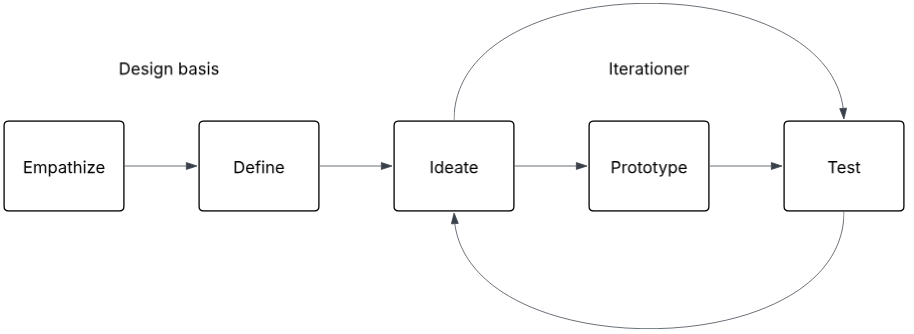</a>
    <figcaption>Our design strategy: a shared empathize/define basis, followed by three iterations of ideate → prototype → test, moving from low- to high-fidelity.</figcaption>
  </figure>

  <section class="case-section" id="research">
    <span class="eyebrow">Design Basis · Empathize &amp; Define</span>
    <h2>Understanding the constraints before designing anything</h2>
    <p class="tldr">Screens can overwhelm an exhibition, sound doesn't, and tech needs to survive daily use, so we scoped the whole project around one goal.</p>
    <p>Early conversations with our museum contact set the boundaries: too many screens pull attention away from the artifacts, sound preserves visitors' other senses, and any technology needs to survive daily wear without breaking the experience. We mapped the problem space, set the goal <em>"turn static exhibitions into interactive ones using AI,"</em> and used How-Might-We questions to focus on the visitor's interaction with AI rather than the technology itself.</p>
    <div class="figure">
      <a href="images/02-define-mapping.png" target="_blank" rel="noopener">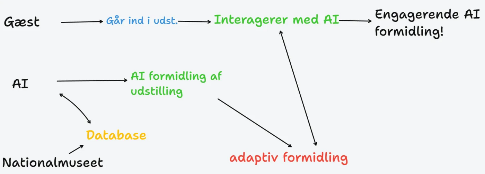</a>
      <figcaption>Mapping how the visitor and the AI would relate to each other, used to scope the first design sprint.</figcaption>
    </div>
  </section>

  <section class="case-section" id="iteration-1">
    <span class="eyebrow">Iteration 1 · Low-fidelity · Adaptive Storytelling</span>
    <h2>An AI-generated scavenger hunt</h2>
    <p class="tldr">Visitors engaged more with the exhibition while hunting for answers, but a slide-based prototype confused navigation.</p>
    <div class="tags small">
      <span class="pill" style="--dot:#8a8a8a">Design Sprint</span>
      <span class="pill" style="--dot:#8a8a8a">Wizard of Oz</span>
      <span class="pill" style="--dot:#FBBC04">Google Slides</span>
    </div>
    <div class="callout">
      <span class="label">Hypothesis</span>
      AI integrated into a gamified design can increase visitor engagement.
    </div>
    <p>Each of the three of us pitched an independent solution sketch, and the team voted on which to prototype: an AI-generated scavenger hunt won out over a motion-triggered soundscape and an AI-judged historical dress-up game. In the winning concept, visitors pick an exhibition and age group; the AI generates a personalized quiz question with hints, sending them off to find and photograph the matching artifact. Points and a leaderboard provided the gamification layer.</p>
    <div class="gallery">
      <a class="selected" href="images/03-it1-sketch-1.jpg" target="_blank" rel="noopener">
        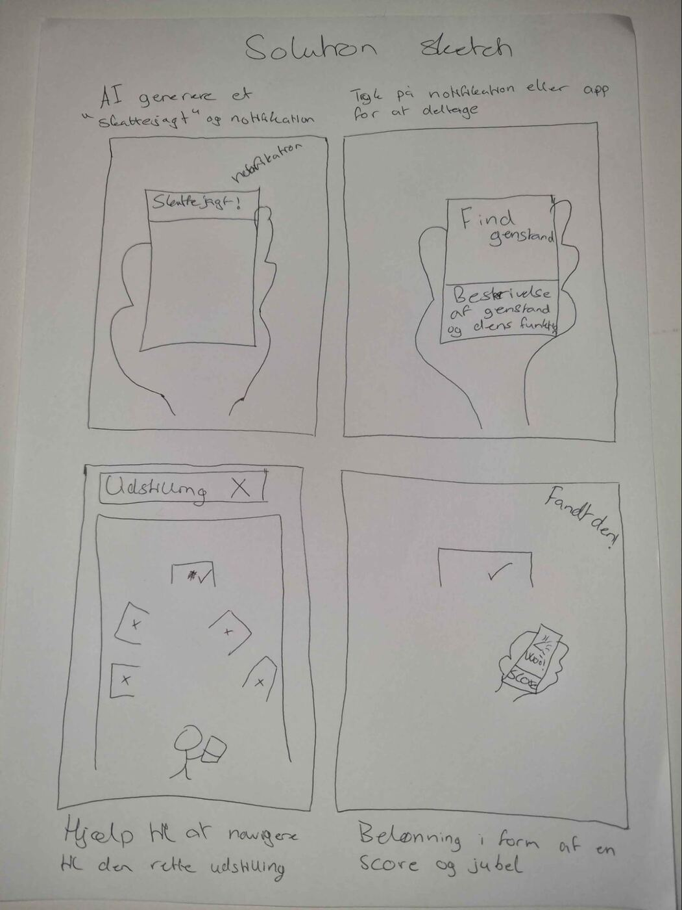
        <span class="cap"><b>Selected</b> · scavenger hunt</span>
      </a>
      <a href="images/04-it1-sketch-2.jpg" target="_blank" rel="noopener">
        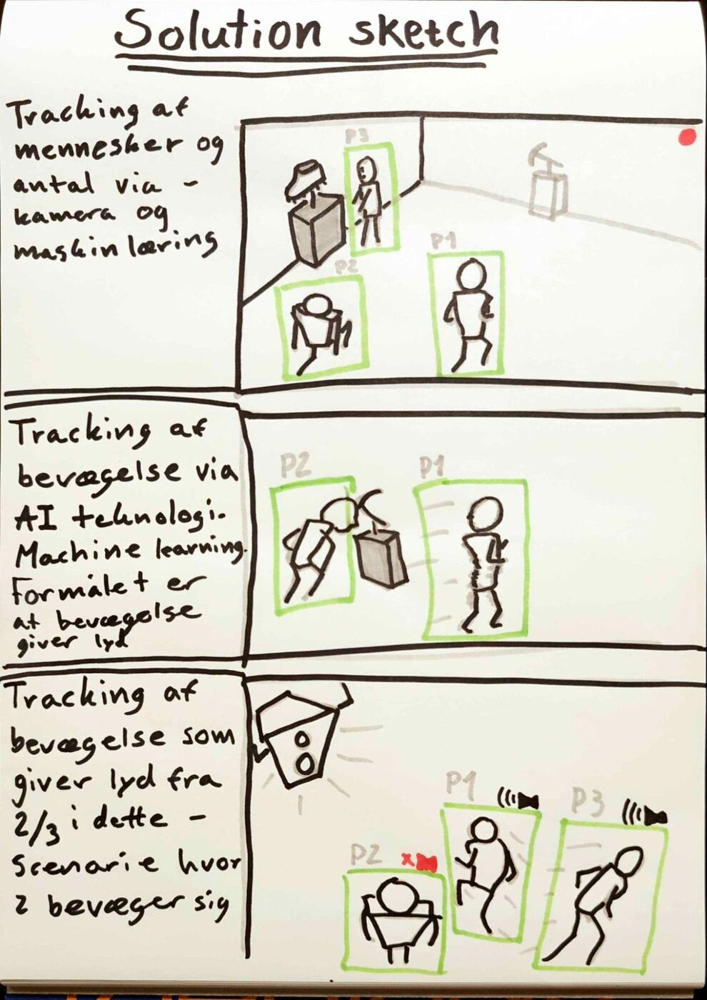
        <span class="cap">Alternative · soundscape</span>
      </a>
      <a href="images/05-it1-sketch-3.jpg" target="_blank" rel="noopener">
        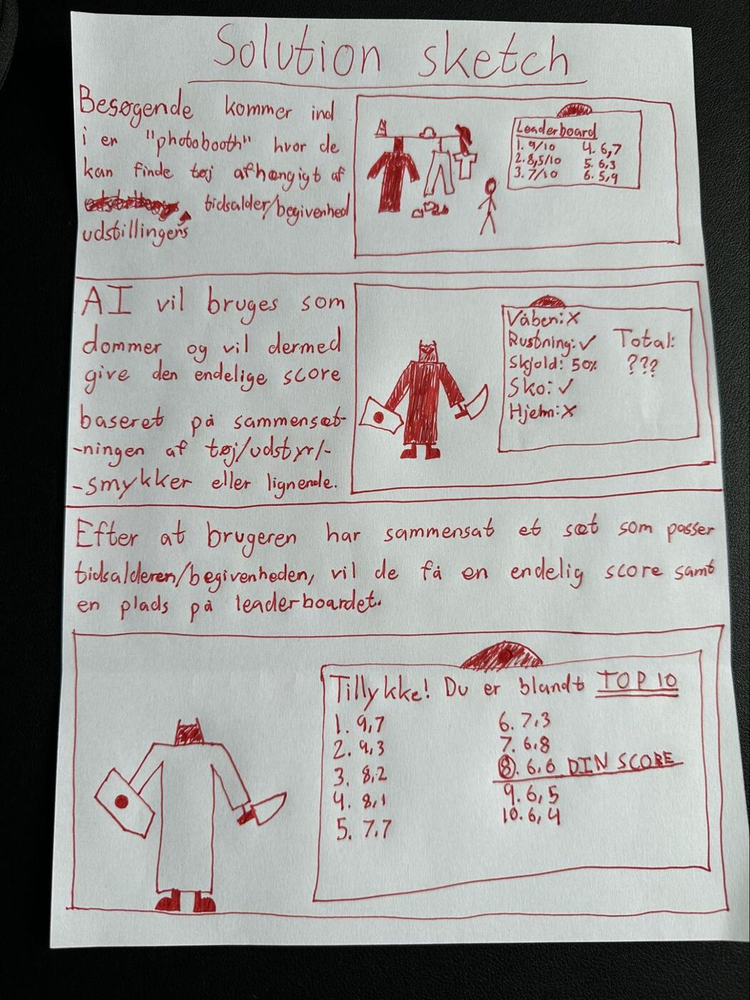
        <span class="cap">Alternative · dress-up game</span>
      </a>
      <a href="images/06-it1-qr-code.png" target="_blank" rel="noopener">
        
        <span class="cap">QR entry point</span>
      </a>
      <a href="images/07-it1-onboarding.jpg" target="_blank" rel="noopener">
        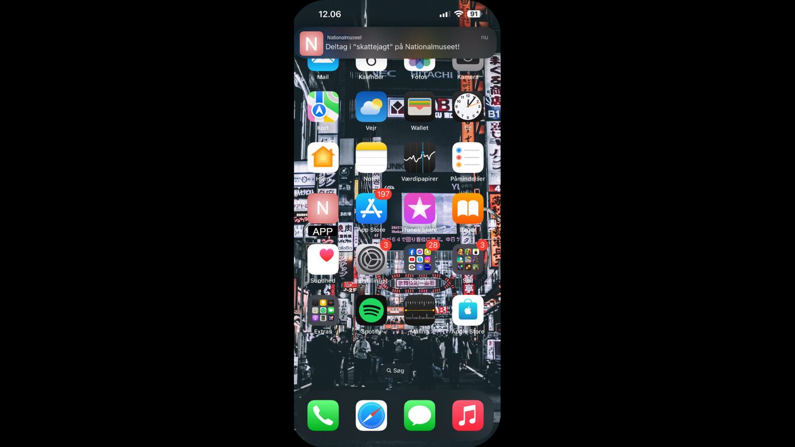
        <span class="cap">Onboarding</span>
      </a>
      <a href="images/08-it1-quiz.png" target="_blank" rel="noopener">
        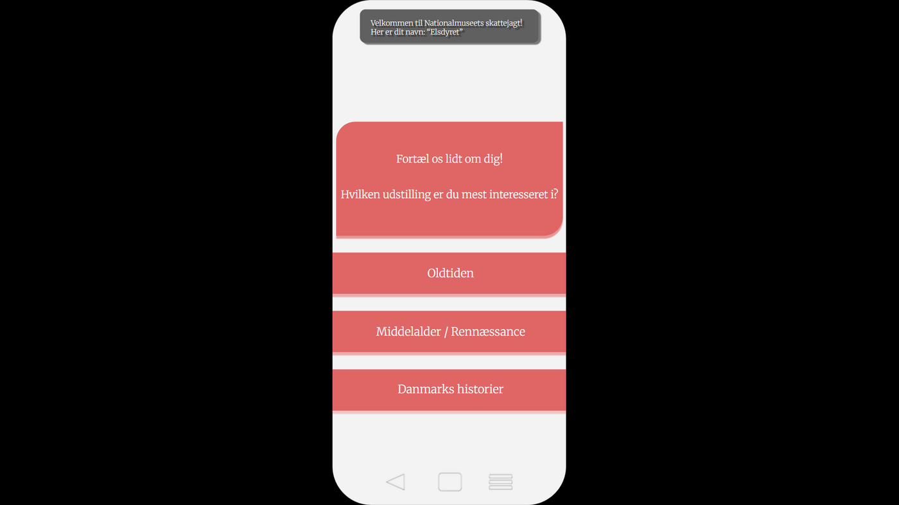
        <span class="cap">Quiz + hints</span>
      </a>
      <a href="images/09-it1-leaderboard.png" target="_blank" rel="noopener">
        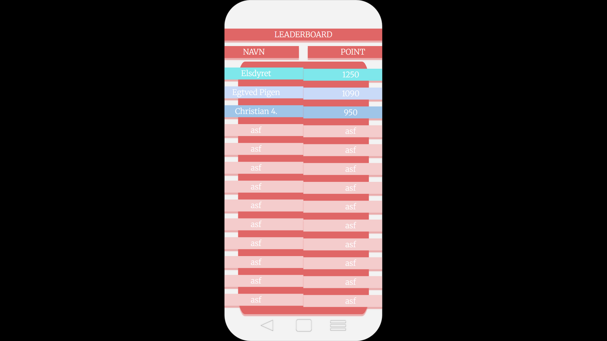
        <span class="cap">Leaderboard</span>
      </a>
    </div>
    <div class="callout insight">
      <span class="label">Insight</span>
      3 of 4 users engaged more with the exhibition's own text and objects while hunting for their answer, validating the hypothesis. But the flat, slide-based prototype caused real usability friction: buttons didn't read as interactive, and small text hid the hints.
    </div>
  </section>

  <section class="case-section" id="iteration-2">
    <span class="eyebrow">Iteration 2 · Speculative design · Future Storytelling</span>
    <h2>A talking AI hologram</h2>
    <p class="tldr">Visitors engaged with the AI's dialogue, but replacing the exhibition's storytelling outright worked against it.</p>
    <div class="tags small">
      <span class="pill" style="--dot:#8a8a8a">Speculative Design</span>
      <span class="pill" style="--dot:#8a8a8a">Wizard of Oz</span>
      <span class="pill" style="--dot:#ED225D">p5.js</span>
      <span class="pill" style="--dot:#302E31">OBS Studio</span>
      <span class="pill" style="--dot:#10A37F">ChatGPT</span>
    </div>
    <div class="callout">
      <span class="label">Hypothesis</span>
      AI-driven storytelling that fully replaces static exhibition text can create engagement on its own.
    </div>
    <p>We used speculative design to explore a longer time horizon: <em>what if museum exhibits changed in real time based on visitors' emotions, read by AI?</em> ChatGPT helped visualize the concept after OpenArt and Copilot came up short. We then built a physical Wizard-of-Oz prototype: a live video feed reflected through laser-cut acrylic panels to simulate a 3D hologram, with a p5.js face-tracking mask as the AI's "face" while a researcher spoke as the AI in real time.</p>
    <div class="gallery">
      <a href="images/10-it2-ai-concept.jpg" target="_blank" rel="noopener">
        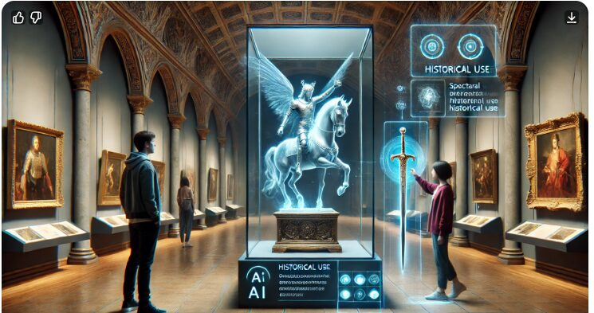
        <span class="cap">AI-generated concept (ChatGPT)</span>
      </a>
      <a href="images/11-it2-sketches.jpg" target="_blank" rel="noopener">
        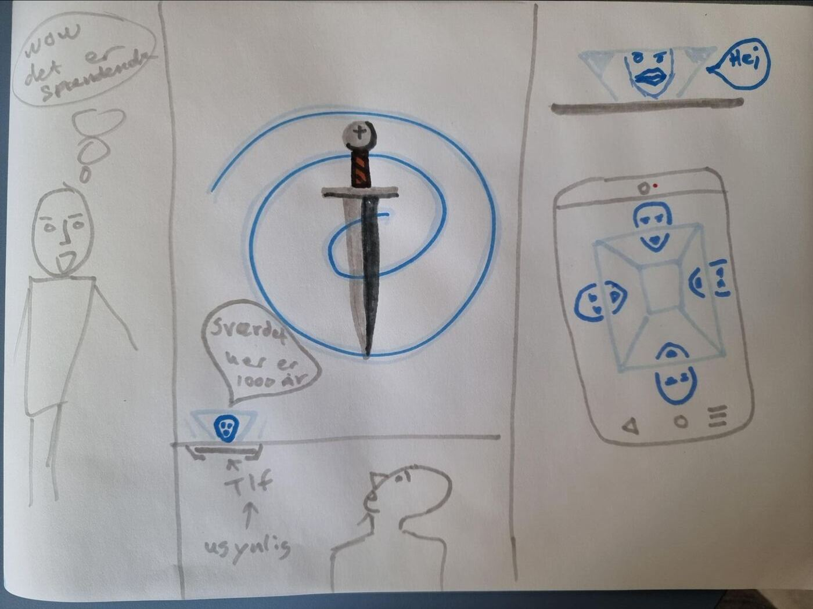
        <span class="cap">Hologram cabinet sketches</span>
      </a>
      <a href="images/12-it2-trapez-dimensions.jpg" target="_blank" rel="noopener">
        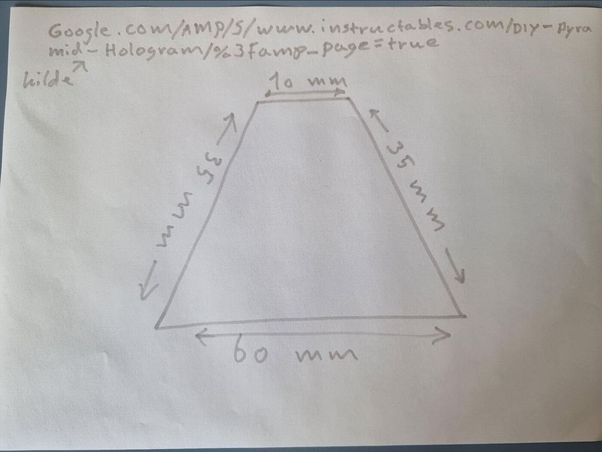
        <span class="cap">Trapezoid dimensions</span>
      </a>
      <a href="images/13-it2-hologram-system.jpg" target="_blank" rel="noopener">
        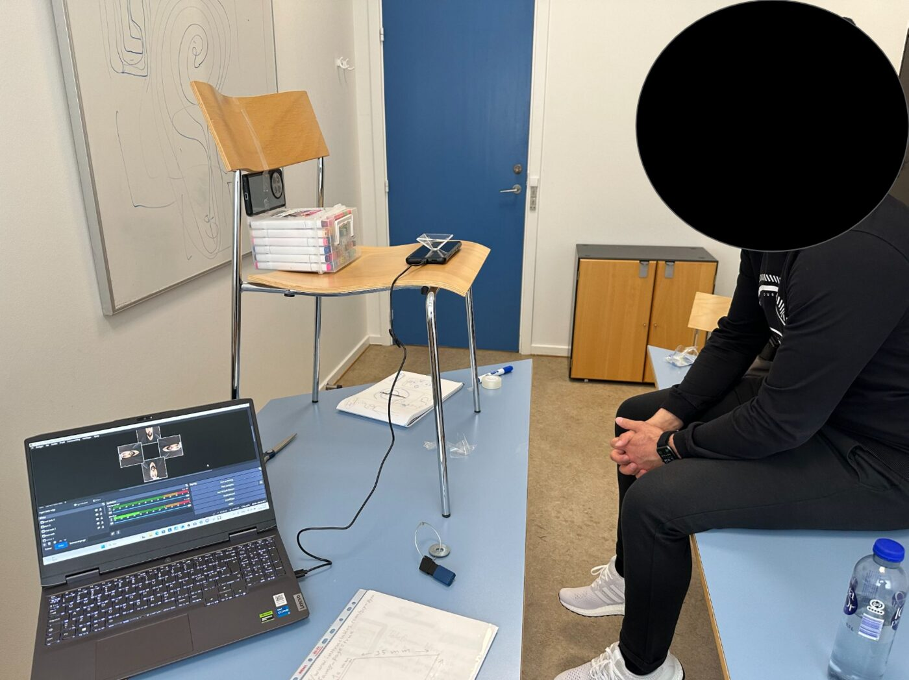
        <span class="cap">Live video rig (OBS)</span>
      </a>
      <a href="images/14-it2-hologram-result.jpg" target="_blank" rel="noopener">
        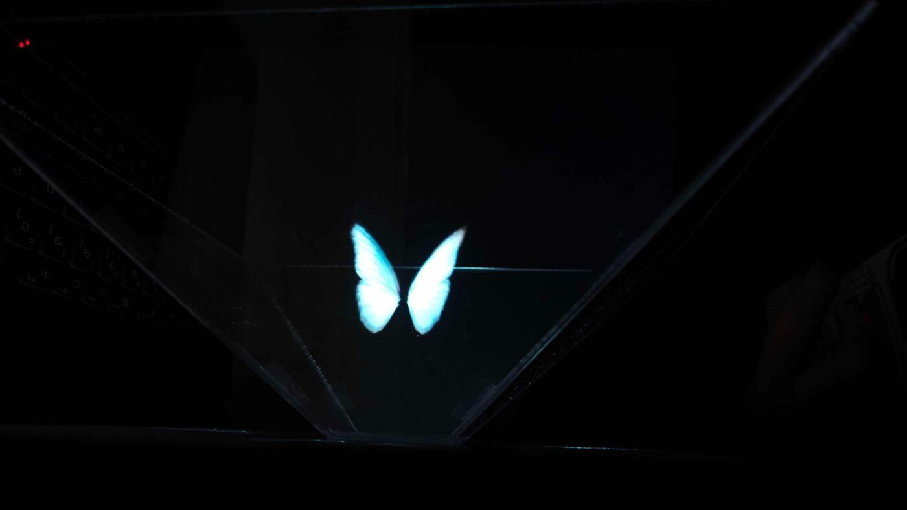
        <span class="cap">Hologram effect, in use</span>
      </a>
    </div>
    <div class="callout insight">
      <span class="label">Insight</span>
      Visitors engaged with the dialogue, but fully replacing the static storytelling backfired: the hologram distracted from the artifacts rather than supporting them. Clear signal: AI should supplement an exhibition, not replace it.
    </div>
  </section>

  <section class="case-section" id="iteration-3">
    <span class="eyebrow">Iteration 3 · High-fidelity · Personalized Storytelling</span>
    <h2>A real AI stack, with a rewards system</h2>
    <p class="tldr">The strongest-performing iteration: real AI plus a personal rewards system produced the highest engagement of all three tests.</p>
    <div class="tags small">
      <span class="pill" style="--dot:#8a8a8a">Design Sprint</span>
      <span class="pill" style="--dot:#ED225D">p5.js</span>
      <span class="pill" style="--dot:#2496ED">Docker</span>
      <span class="pill" style="--dot:#EA4B71">n8n</span>
      <span class="pill" style="--dot:#000000">Ollama</span>
      <span class="pill" style="--dot:#1F1E37">ngrok</span>
    </div>
    <div class="callout">
      <span class="label">Hypothesis</span>
      A gamified rewards system can motivate visitors to answer more questions and personalize their own progress.
    </div>
    <p>This iteration combined the strongest signals from both earlier rounds (quiz-based engagement, kept lightweight) into a real, working AI system instead of a simulated one. Visitors scan a QR code to trigger an AI-generated quiz question pulled from a live artifact database; correct answers unlock gear for a personal "Chibi" avatar. Stack: p5.js for the interface, Docker + n8n + Ollama running a local open-source model, and ngrok to expose it for on-site testing at the museum.</p>
    <div class="gallery">
      <a href="images/15-it3-sketch-1.png" target="_blank" rel="noopener">
        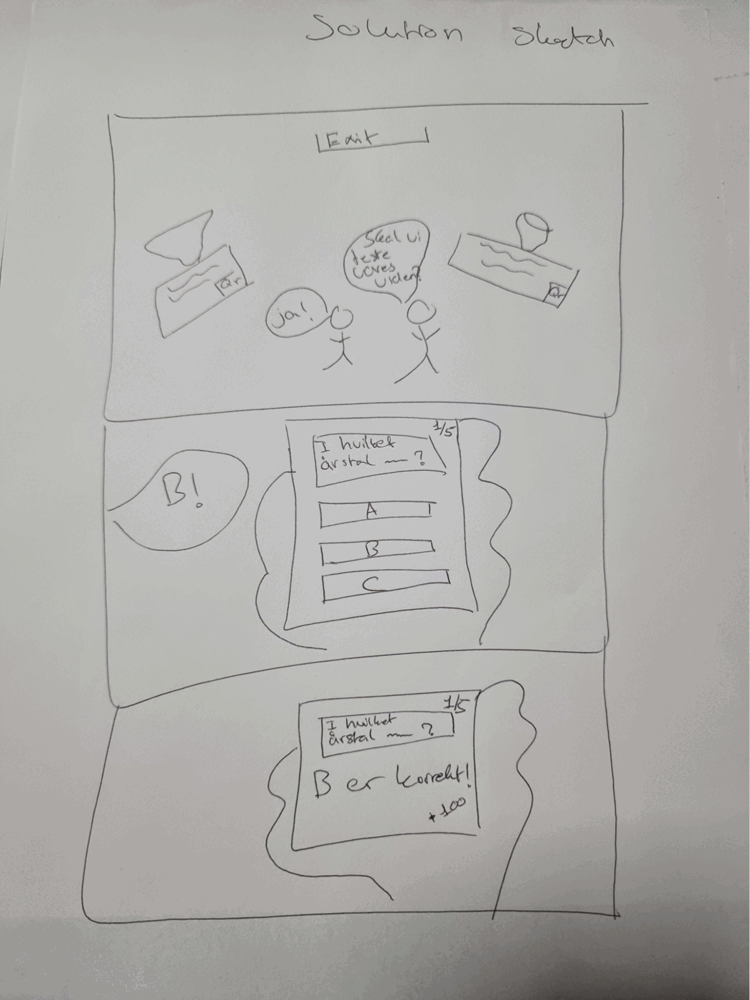
        <span class="cap">Sketch · QR-triggered quiz</span>
      </a>
      <a href="images/16-it3-sketch-2.png" target="_blank" rel="noopener">
        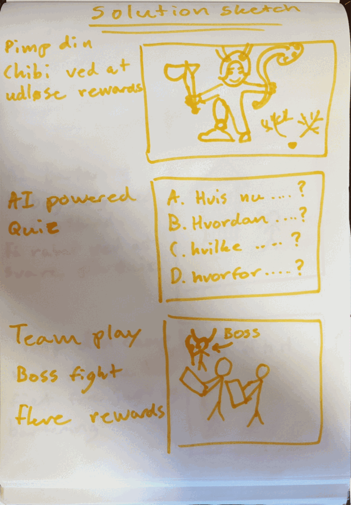
        <span class="cap">Sketch · Chibi rewards</span>
      </a>
      <a href="images/17-it3-sketch-combined.jpg" target="_blank" rel="noopener">
        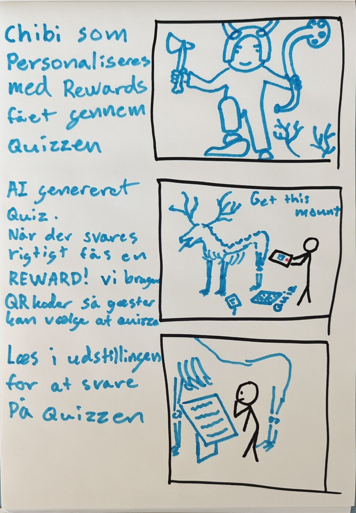
        <span class="cap">Combined final sketch</span>
      </a>
      <a href="images/18-it3-onboarding.png" target="_blank" rel="noopener">
        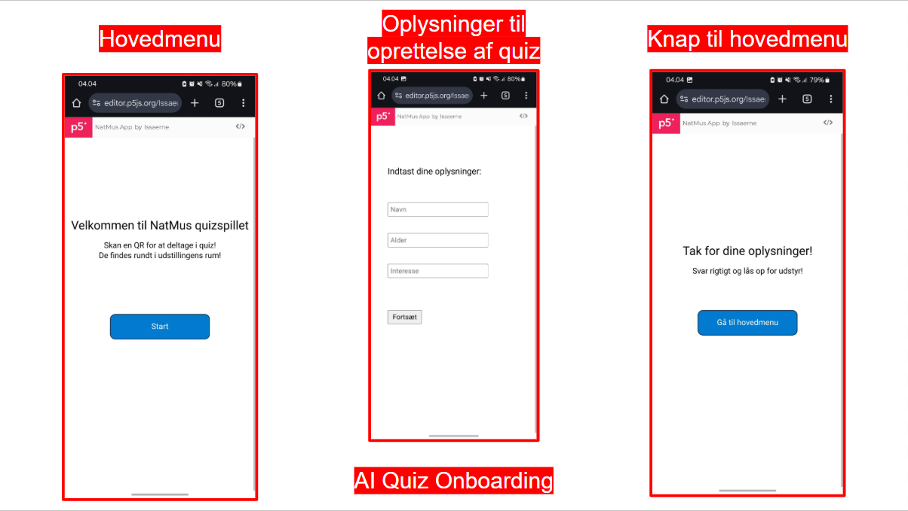
        <span class="cap">Onboarding</span>
      </a>
      <a href="images/19-it3-quiz-start.png" target="_blank" rel="noopener">
        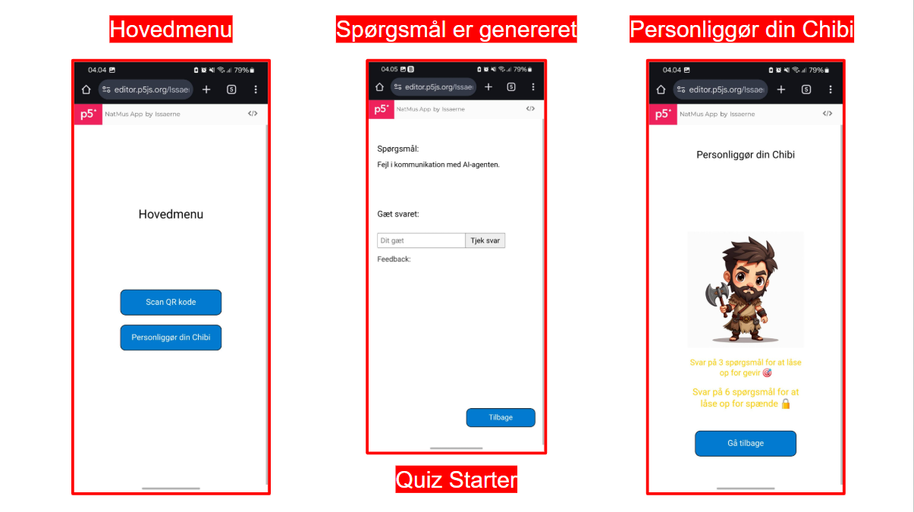
        <span class="cap">AI-generated quiz</span>
      </a>
      <a href="images/20-it3-chibi-rewards.png" target="_blank" rel="noopener">
        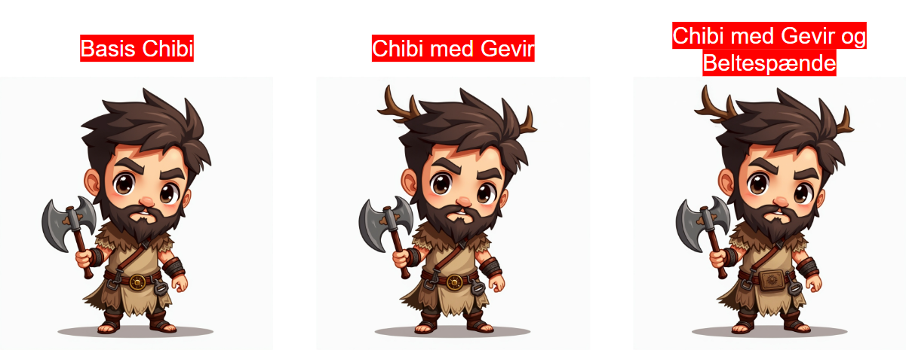
        <span class="cap">Chibi rewards unlocked</span>
      </a>
    </div>
    <div class="callout insight">
      <span class="label">Insight</span>
      Highest engagement across all three tests: users kept answering questions even after their rewards had run out. It also surfaced the trade-off of running real AI live, when one test session was disrupted after the model's response time and reliability broke down mid-test.
    </div>
  </section>

  <section class="case-section" id="outcome">
    <span class="eyebrow">Outcome</span>
    <h2>What actually drove engagement</h2>
    <p class="tldr">Engagement tracked with how personalized and adaptive the experience felt, not with how advanced the AI was.</p>
    <p>Comparing all three prototypes against the museum's static baseline, our conclusion is that the National Museum can most effectively use AI by supplementing static exhibitions with a personalized, adaptive layer. That means not replacing them outright, and not giving AI a spoken "voice" in the room, since user tests showed a talking AI risks embarrassing visitors who answer incorrectly in front of others.</p>
    <div class="figure">
      <a href="images/21-summary-annotated-portfolio.png" target="_blank" rel="noopener">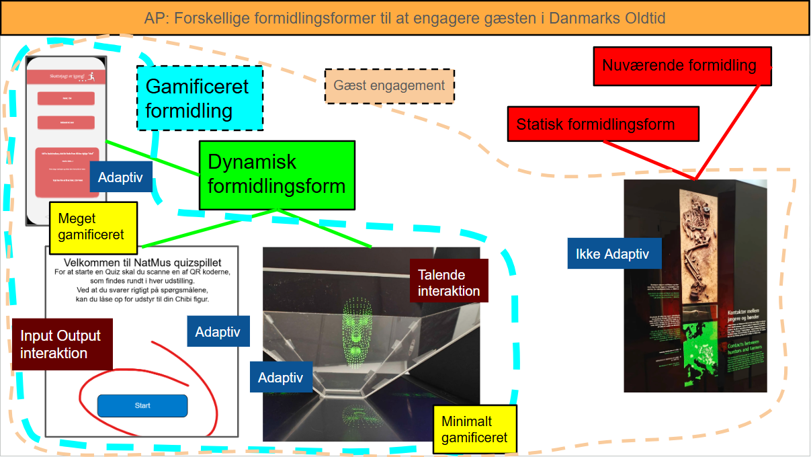</a>
      <figcaption>Annotated portfolio: comparing the adaptive, speculative and personalized prototypes against the museum's static baseline.</figcaption>
    </div>
  </section>
</main>

<footer id="contact">
  <a href="https://github.com/LSHarder">GitHub</a>
  <a href="mailto:l_sydel_harder@live.dk">Email</a>
  <a href="https://www.linkedin.com/in/lukas-sydel-harder/">LinkedIn</a>
</footer>
